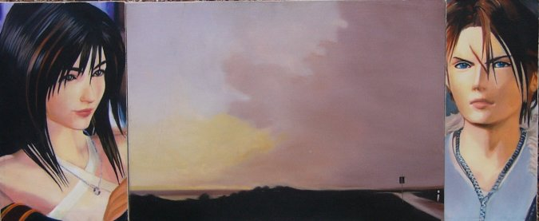

[TOP] Jose Quesada, Untitled (2000), 68 x 28 cm, 27 x 10.6 inch, Oil on canvas
The couple depicted is taken from "Final Fantasy VII". They are videogame characters, painted using the most traditional technique (oil on canvas). The middle landscape is a copy of a Richter painting. He used a photograpy to create his painting. The three parts are, then, representations of a representation.
As you probably know, Richter claims to be "indifferent" to subject matter. However, following his work in his atlas project and in what he actually ends up painting, one can see that this indifference is utopic. Richter did select his themes, although his criteria may be really obscure. In my case, I just found the whole "romanticism" of the Richter painting funny when put in between these two virtual reality lovers. In an stretch of the Kitsch ideals, everything in this painting is exquisitely "artificial". We all (the designers of the characters, Richter, me) fake not to care for some ideals, but we do.